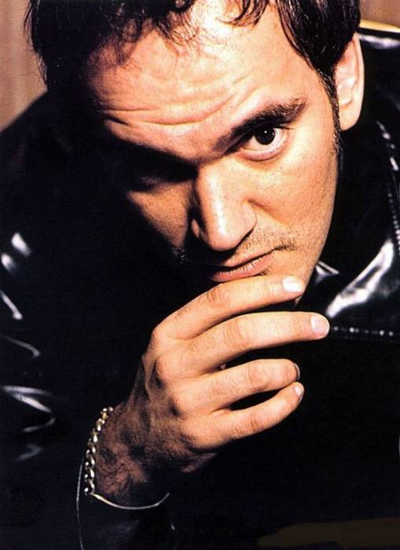

昆汀·塔伦蒂诺（Quentin Tarantino），1963年3月27日出生于美国田纳西州诺克斯维尔，意大利裔美国导演、编剧、演员、制作人。4岁时，父母因为“现实问题”而离婚。母亲改嫁作曲家柯特·扎斯托皮尔。继父柯特对艺术和电影的见解都很独特，在昆汀年幼时，柯特经常带着他去看那些古怪的电影，并试图让他理解电影中另类的文化。1971年，8岁的昆汀·塔伦蒂诺跟着母亲和继父搬到好莱坞的所在地洛杉矶生活。他在小学时便曾拿着照相机试图拍摄学校里的小混混殴打同学，但被发现后自己也挨了打。高中时，一心只想成为一名方法派演员的昆汀·塔伦蒂诺，毅然从阿姆斯特丹中学退学，靠着继父的支持，到当地一家名为詹姆斯·贝斯特（James Best）的电影公司学习表演。但他在贝斯特公司的境遇并不顺利。他自以为是“一个表演天才”，对教自己表演的老师指手画脚。他总能指出老师表演时的失误，这让他在学校里并不受欢迎。1984年，已经21岁的昆汀·塔伦蒂诺觉得在贝斯特公司学不到任何新东西，也没有人愿意推荐他参演电影，便离开了公司，用省吃俭用省下来的钱去了曼哈顿，在“影音档案馆”音像店做营业员。在音像店打工的日子里，昆汀·塔伦蒂诺看了大量的西部片和香港电影 。 在一起打工的店员中，有一个名叫罗杰·阿瓦里的业余作家。两人总是一起值夜班，互相倾谈电影梦。受阿瓦里影响，逐渐在观影中了解到一些导演技法的昆汀·塔伦蒂诺开始自己写剧本
